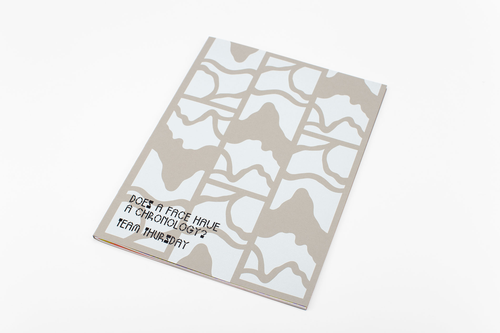
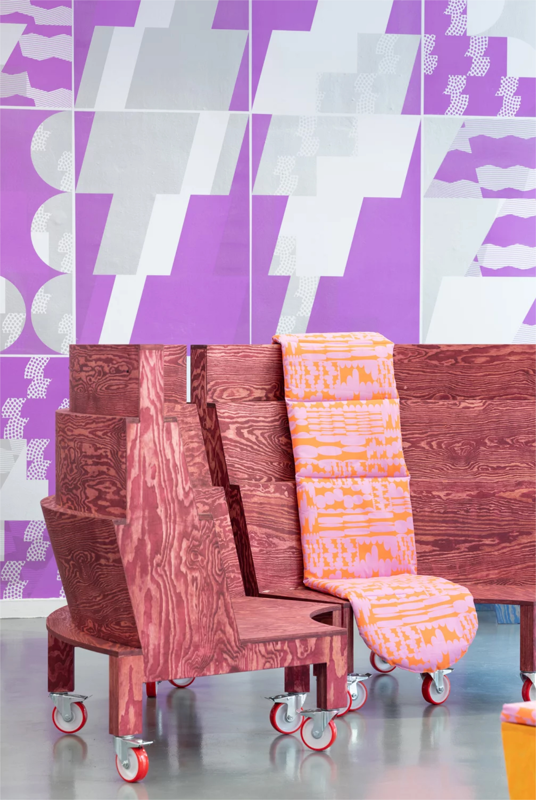
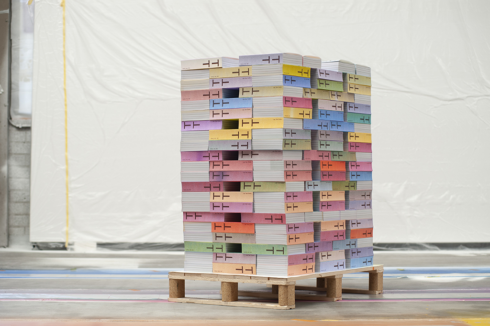
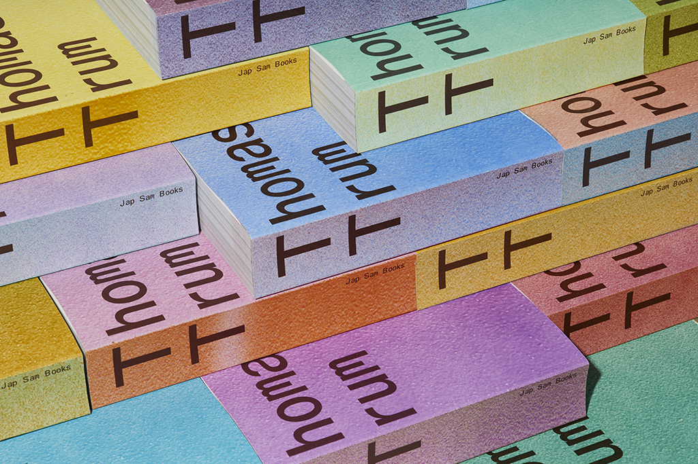

Team Thursday is a graphic design studio founded by Loes van Esch and Simone Trum, based in Rotterdam,
Netherlands. They specialize in designing visual identities, books, and spatial objects. With a particular
interest in typography, a curiosity for materials, and the
potential performativity of objects, they seek patterns in their surroundings and explore ways to transform
them into designs.
SL
Hi Simone! Thank you for joining! I'm such a fan of your work!
Team Thursday actively searches for ways to transform patterns in everyday life into design. How do you
initiate your process? When you begin creating a pattern, do you start with the color, pattern, or both
simultaneously?
TT
When we create patterns, it's usually for a specific purpose. For example, last year we made Jacquard woven
curtains. For that project, we were provided clear direction that we could work with patterns. It also
aligned well with the weaving technique, allowing us to explore a lot of possibilities. We're particularly
drawn to vernacular design and find inspiration just by walking around the streets and observing things.
Many of the patterns we create are based on something we've encountered or seen. It's satisfying for us to
translate these findings into a flat design. Personally, I find it compelling to use patterns as a sort of
structural tool in a book if the content calls for it or if we can extract a pattern from the content
itself. So, typically, we start by finding something — an image or an idea — that we can translate into a
pattern. We don't usually have specific ideas about how the pattern should look or what colors to use
beforehand. Instead, we begin with a conceptual approach, relating to a certain content or idea. That's
usually how we start our formal research into what effect the pattern will have.
SL
I love these books, Does a Face Have a Chronology? and Graphic Design Play Book. What I've
noticed is that you guys enjoy for transforming existing patterns from city facades or patterned hats into
fresh interpretations. What are your core interests or primary driving themes?

↑
Does a Face Have a Chronology? shows a visual typographic research into
city surfaces, that Team Thursday started during their residency in Seoul, South Korea.
TT
In the case of Does a Face Have a Chronology?, it happened during the Seoul residency. Our initial plan was
to have no plan and just see what happens. This is something we usually can't do in our graphic design
practice, where there are always assignments and deadlines. While we try not to be overly results-driven,
there inevitably needs to be a final result. We saw the residency as an opportunity to take a break from
that. So, we didn't set specific goals; instead, we started walking around a lot. Coming from the
Netherlands, a country known for its brick architecture and modernist traditions, we were particularly
fascinated by the highly ornamented bricks we found in the streets.
We also love typography, and the idea of creating a variable typeface out of bricks, like a typographic
bricklayer, intrigued us. We envisioned the stones having solid states but being counter-variable. This led
us to rethink movements in a typeface in a different way. So, we took these bricks as a starting point, and
translating them from photos into vector shapes was the easiest way to begin. From there, we continued
building. In the book, the black type is essentially a regular typeface, but the colorful pages showcase
various exercises where we built walls of typography. These became an ever-evolving set of types to us.
In this case, our goal was never explicitly to “create a pattern.” Instead, it emerged as a result of our
research. This approach reflects how we like to consider patterns in relation to the content or project
we're working on, exploring what they can be. This method of working resonates with us.
SL
As you mentioned, graphic design can often be results-driven or heavily influenced by clients. However, I
believe there's a way for graphic design to be more freeform, allowing designers to approach it as a form of
play or self-fulfillment. In this sense, I think the process should be more liberal and experimental. I've
been educated in Western education systems, having moved to the States from Korea during high school and now
pursuing graduate studies. Initially, I idolized Dutch design and Western design principles, thinking they
were the ultimate guide to good design. However, as I progressed through grad school, I began to search for
my own expression and motives within graphic design. I realized that what I had learned might not
necessarily be the answer and that I could find more freedom within my thesis research. Color and pattern
are ways I find joy and express myself, which is why I'm curious about your practice.
TT
Regarding what you're saying, Loes and I studied in Arnhem, and we are Dutch. So, there are certainly
differences, but we were also brought up with a hardcore modernist tradition. The work we are creating now
is quite different from what we did at the academy. After graduating, it took us a long time to break free
from the constraints of this modernist approach and define our own rules and interests. It was a journey
that took us many years to accept that we could explore different things and to discover what those things
were.
SL
Did you discover ways to break those rules, or are you still in the process?
TT
I hope we're still in the process because I'd like to think that this is an ever-evolving thing. But yeah, I
feel like we're somewhat in between certain traditions or ways of working, and I'm comfortable with that.
We're not hyper-ornamental in a classical way, but also not hyper-modernist or hyper-conceptual. We're also
not extremely autonomous because we still work for commissioners. So, I kind of like this place, and I want
to find out what else we can do.
↑
Poster Series Disclosed
SL
What is the purpose behind hosting workshops and exhibitions in your space? You seasonally
host different workshops and exhibitions at TTHQ?
TT
The evolution of our studio space was quite organic. It's an old garage that now looks like this, situated
in the city center of Rotterdam. When we stumbled upon this space, we felt fortunate, as it's becoming
increasingly difficult to find good studio spaces in Rotterdam. During our residency in Seoul, I collected a
lot of posters from friends, graphic designers I had met. I was always conscious of not wanting to be
someone who just visits a city for my own benefit without giving something back. So, the first thing we
organized was an exhibition of these posters here in the space. We decided to use a curtain to separate the
space into two areas, which turned out to be quite convenient. The idea just evolved naturally, without much
planning. It was refreshing to organize an exhibition that didn't feature our own works, which can be
more
challenging. We simply wanted to showcase the posters, and the opening reception was a great success. After
that, it just became a recurring event. Sometimes friends would ask us if they could exhibit here too.
However, it's been relatively quiet for about one and a half years now, and we're planning the next one for
September. It can be a bit challenging to organize because our studio is quite packed, and we have to
rearrange everything. As a graphic designer, it's still a big question for me: How do we want to proceed in
the coming years? I want to maintain autonomy but don't necessarily want to become an artist. It's an
ongoing question for me. Organizing these exhibitions allows us to operate autonomously; we don't rely on
subsidies or external directives. We simply do it when we feel like it. From an organizational perspective,
it's liberating, and we also learn a lot from collaborating with other artists and discussing how to set up
the space. It's almost like an annual studio party, but instead of fancy cocktails, we invite artists and
interested individuals to view the artwork. These organizational aspects and the interactions with visitors
are integral to our studio's identity.
SL
As you mentioned, 'autonomous,' I think there's an interesting relationship for graphic designers. We often
have commission-driven work, but we also engage in self-initiated projects. I've been thinking the
difference between artists and designers.
Nowadays, the definitions of fine arts and graphic design seem to be a bit blurred, and there's an overlap
between the two. I visited Na Kim's studio in Berlin and asked her whether she still sees herself as a
graphic designer or more as an artist. She mentioned that she's starting to identify herself more as an
artist within the field of graphic design because graphic design tends to be more commission-driven and
outcome- driven, whereas art is more about expression and revolves around topics of interest. I'm still
searching for answers myself.
TT
I think the word 'autonomous' is something I use to challenge myself in a way because I'm very aware that
our work as graphic designers is not inherently autonomous. This term is more commonly associated with
artists. However, I find Na Kim to be a great example, and also, during my time in Seoul, designers like
Sulki and Min and Moonsick Gang seem to blur the lines between graphic designers and artists. Their work
feels liberated and free, even though they may still work for commissioners.
I'm now thinking about how I, as a graphic designer, can become my own commissioner. There are Dutch
designers who start their own publishing houses, venture into education, or launch their own magazines,
effectively becoming their own commissioners in a way. I find this aspect really intriguing. Perhaps this
could be a path towards greater autonomy for me.
However, I also find that we, as graphic designers, thrive within certain parameters and deadlines. We enjoy
having specific settings to work within. This contradicts the idea of autonomy to some extent. So, I'm not
entirely sure how to reconcile these conflicting desires.
I hope that in the future, we can move away from the traditional design studio model, where we work
primarily for external commissioners. I'm searching for something different, but I'm not sure exactly what
it is yet.

↑
In the ground space of Kunstinstituut Melly in Rotterdam, Team Thursday designed a set of furnitures,
patterned pillows, and a poster set as wallpaper with architect Atelier Tomas Dirrix and artist Koen
Taselaar.
SL
So, you're in the phase of searching?
TT
Yes!
SL
How do you manage and balance life and work? You and Loes are mothers and also graphic designers.
Graphic
designers are generally known to be very hardworking, often pulling all-nighters. Balancing being a
mother
and a graphic designer can be tough.
TT
Loes is not here now because she is on maternity leave, so I can't speak on behalf of us. Also, I'm not
sure
if I have a super clear one. Of course, being a mother and having my own studio makes life a little more
complicated. There's a constant push and pull for time — where to spend it, whether on my daughter, the
studio, or even on myself and my husband. There's also a social life. My daughter is two years old now,
and
because of her, I feel like I can cut out a lot of the unnecessary stuff. I have this feeling that I
really
want to work on meaningful projects because otherwise, I would prefer to spend my time with her. I try
as
hard as possible to focus on projects that I can truly relate to. Before, Loes and I would often pull
all-nighters and work on weekends, which I also kind of love, although it's not healthy. But we could
get
stuck in certain phases of the design process, perhaps postponing decisions because we had the time to
explore more. Now, with less time, we find ourselves making decisions more quickly, which can be
freeing.
Sometimes, a project just needs to be completed, and moving on from it allows us to take steps forward
in
other projects. Viewing our work as part of a larger exploration, rather than as individual
life-or-death
projects, has been really helpful. Becoming a mother has helped me let go a bit more, yet it's also made
me
even more determined to lead this life and run my own studio. It's a bit of both. It's brought a certain
focus that I find really beneficial. Of course, there's also the reality of needing to leave work
unfinished
at times to attend to my daughter's needs. When I'm with her, I try to be fully present and not let work
thoughts intrude. I prefer to keep work and family life separate to give both my best focus.
How is this actually in the US and Korea in terms of expectations when becoming a mother, or related
matters?
SL
Well, from my spective as a Korean, the working scene in graphic design in the US is less tense compared
to Korea, for e. When I was in an agency in New York, people were pretty understanding when you had to
pick up your k during the day, and they were supportive of it. But in Korea, there's still a long way to
go. I've even n told by my boss in Korea that work-life balance isn't something I should seek at my age
or level of car. In Korea, there's still a lot of work to be done. There are many challenges that need
to
be addressed, ecially for women and graphic designers, to reach the balance. What's the point of just
working hard abeing successful if you can't spend quality time with your family or loved ones?
TT
Yes, I think so too. I have to say, actually, also for us. Sometimes, there's, like, we try to be as
understanding as possible, me and Loes between the two of us. But we also know that from the
commissioners'
perspective, there's not always the understanding of not being able to work full time. I work full time
now,
but I have been working four days a week previously. So, one day off was just kind of completely
neglected
by commissioners, you know? And also, both times, because Loes has two daughters, and both times she
went
into maternity leave, she was working on a project and the commissioner just totally neglected that she
had
to go into her maternity leave. Could you learn to push deadlines into that? And I think that's really
problematic. So I think it's still not like the balance, I think it's still not where it should be. But
what
I know in Korea, there's a lot different, a lot harder to do that.


↑
Stacks of Daily Spins books featuring the artwork of artist Thomas Trum.
SL
Right, I hope we finds a middle ground for balance somehow.
Thank you for taking the time to chat with me today! It's been insightful and it's been great getting to
know you on a personal level as well.
TT
Of course! It's really nice to meet you. Thank you for the nice questions and the nice talk. It's super
nice
to see that our books also in your hands. Good luck with the coming months. I think taking one step at a
time is a perfect way to do it.